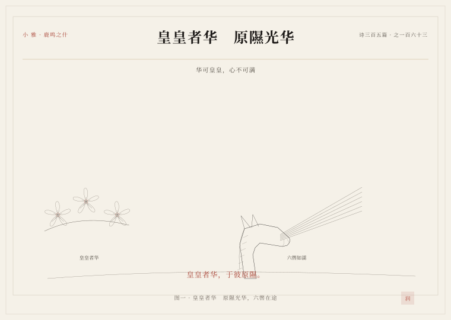
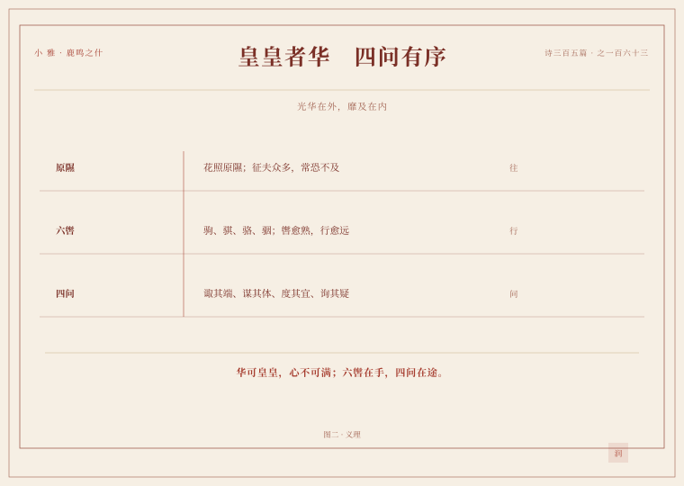

第一百六十三篇 皇皇者华
小雅 · 鹿鸣之什 SJ163
朗读 · 普通话
依经文原文朗读，章次不读出；配古琴底乐，不改速、不加拖腔。全库同一音色（豆包 TTS），非播音员录制。
一 解题
诗三判：
- 谁在说：奉命出使之人，或送使之人。见原隰之花，光华皇皇；率征夫奔走，常恐不及。
- 说什么事：一章总起「每怀靡及」；后四章以马与辔递进，终以「咨诹、咨谋、咨度、咨询」四问收。
- 为何编在此：四牡劳使臣之来，皇华遣使臣之往；一来一往，一劳一遣。
小雅之始，使事居其二。
《毛序》：「《皇皇者华》，君遣使臣也。送之以礼乐，言远而有光华也。」
朱子《诗集传》：「兴也。皇皇，犹煌煌也。原隰，高平曰原，下湿曰隰。駪駪，众多之貌。每怀靡及，常恐不及也。」二章：「驹，马之小者。濡，鲜泽也。咨诹，访问也。」三章：「骐，青黑之马。丝，调也。谋，犹图也。」四章：「骆，白马黑鬣。沃若，润泽也。度，审也。」五章：「骃，浅白色。均，齐也。询，问也。」
本库的看法：《皇皇者华》写的不是使臣的威风，是使臣的「不及」。
花在原隰，光华照野；征夫在道，心常不足。五章四马四辔，不是炫车马，是写「所乘愈良，所问愈广」。光华在外，靡及在内；使臣之德，在问不在答。
须辨：皇皇是煌煌，不是惶惶；原隰是高平与下湿，不是原野；駪駪是众多，不是莘莘；咨诹是访问，不是咨嗟；咨询是问，不是询价。断语：华可皇皇，心不可满；六辔在手，四问在途。
先辨五事：「皇皇」是煌煌，不是惶惶；「原隰」是高平与下湿，不是泛称原野；「駪駪」是众多，不是莘莘学子；「咨诹」是访问，不是咨嗟；「咨询」是询政，不是询价。
二 经文
第一章
皇皇者华，于彼原隰。駪駪征夫，每怀靡及。
第二章
我马维驹，六辔如濡。载驰载驱，周爰咨诹。
第三章
我马维骐，六辔如丝。载驰载驱，周爰咨谋。
第四章
我马维骆，六辔沃若。载驰载驱，周爰咨度。
第五章
我马维骃，六辔既均。载驰载驱，周爰咨询。
三 韵读
- 一章：华、隰、及，鱼、侵交错。声开而收。
- 二章：驹、濡、诹，侯、鱼相叶。声柔。
- 三章：骐、丝、谋，之部相叶。声细而长。
- 四章：骆、若、度，铎部相叶。声亮。
- 五章：骃、均、询，真部相叶。声匀而远。
读法：五章同一句式，只换马、换辔、换问。换马见「所乘愈良」，换辔见「所御愈熟」，换问见「所求愈深」。
四问不是重复，是层层入细：诹其端，谋其体，度其宜，询其疑。
四 字义与名物
- 皇皇：煌煌，光明。华：花。原隰：高平之地与原湿之地。駪駪：众多。征夫：行役之人。每怀靡及：常恐不及。
- 驹：小马。六辔：四马六辔。濡：鲜泽。载驰载驱：且驰且驱。周：遍。咨诹：访问。
- 骐：青黑之马。丝：调适如丝。咨谋：谋议。骆：白马黑鬣。沃若：润泽。咨度：审度。骃：浅白杂色马。均：齐。咨询：询问。
五 今译
一章：煌煌的花，开在高平与低湿之地。众多的征夫，常恐所怀不及。
二章：我的马是小驹，六条辔绳鲜润。且驰且驱，遍访而咨询。
三章：我的马是青黑，六条辔绳如丝。且驰且驱，遍访而谋议。
四章：我的马是白骆，六条辔绳润泽。且驰且驱，遍访而审度。
五章：我的马是浅白，六条辔绳齐整。且驰且驱，遍访而询问。
六 章旨
- 一章：华在原隰，是「光被下土」；征夫靡及，是「心不敢满」；光华与不及并置，是使臣之骨。
- 二章：驹小而辔濡，是「始行」；咨诹，是「问其端」。
- 三章：骐而辔丝，是「行渐熟」；咨谋，是「谋其体」。
- 四章：骆而辔沃，是「行渐远」；咨度，是「度其宜」。
- 五章：骃而辔均，是「行将返」；咨询，是「询其疑」；四问尽，使事毕。
七 诗教
- 使臣之华在问：车马辔绳是外华，咨诹谋度是内华；只夸车马，则使臣成骄使。
- 「每怀靡及」是使德：常恐不及，故不敢以已知为足；一问再问，问至无疑，方称使。
- 四问有序：诹、谋、度、询，由粗入细，由事入疑；问有序，则政不烦。
八 分寸与边界
- 不把「皇皇」读成惶惶：皇皇是光明；读成惶，则使臣成惧人。
- 不把「原隰」读成原野：原隰是高平与下湿；泛称原野，则「华」无所托。
- 不把「駪駪」读成莘莘：駪駪是众多；读成学子，则征夫失其役。
- 不把「咨诹」读成咨嗟：咨诹是访问；读成叹，则四问皆虚。
九 存疑
- 诗旨：毛序「君遣使臣」，朱子从之；一说使臣自述。本库从遣使，兼取自述之辞。
- 「六辔」：四马应有八辔，诗言六辔，因两服内辔系于轼。从六辔之制，不疑其误。
- 「咨诹」等四字：毛传分「访问、谋、度、询」；朱子同。从四义，不合并。
- 「骃」：朱子「浅白杂色」；一说「黄白」。从浅白杂色。
十 跨典
- 《论语》「使于四方，不辱君命」；此篇四问，正是「不辱」之本。
- 《尚书》「询于刍荛」；使臣遍问，不遗贱者。
- 《礼记》「入境而问禁，入国而问俗」；皇华之问，是使礼之始。
十一 双卡与图
六对：
| 皇皇（煌煌） |
皇皇（惶惶） |
| 原隰（高平下湿） |
原隰（原野） |
| 駪駪（众多） |
駪駪（莘莘） |
| 咨诹（访问） |
咨诹（咨嗟） |
| 咨度（审度） |
咨度（猜度） |
| 咨询（询政） |
咨询（询价） |

图一 · 皇皇者华 原隰光华，六辔在途

图二 · 皇皇者华 每怀靡及，四问有序